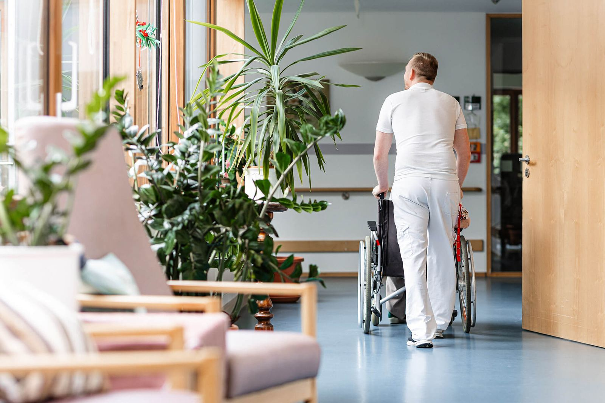
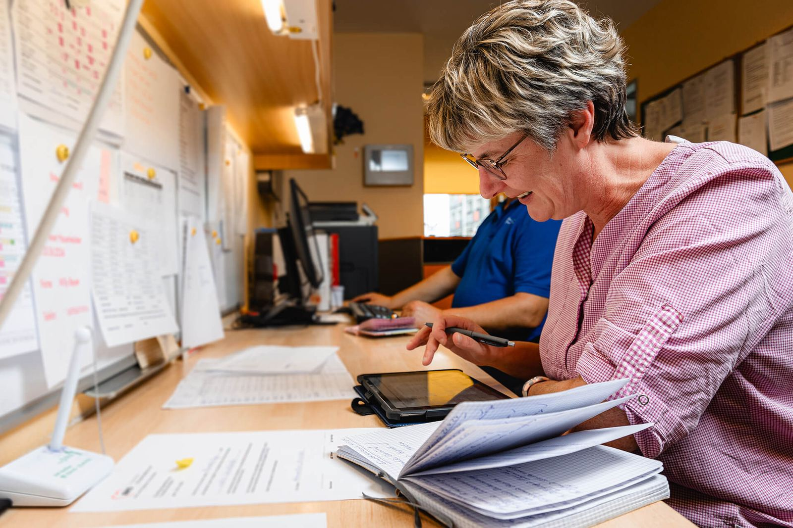
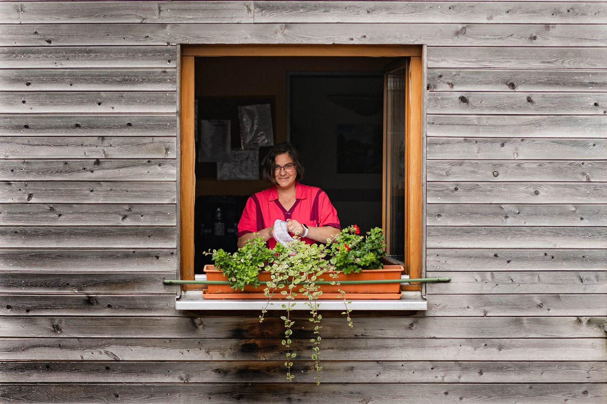

Ihr Dienstplan. Unser Team.
Wir suchen Pflegefachkräfte und Auszubildende in Hohenmölsen, Zeitz und Naumburg. Sie hinterlassen Ihre Nummer, wir rufen innerhalb von 24 Stunden zurück.


Was Sie bei uns bekommen
Alles hier steht so in unseren Stellenausschreibungen. Fragen Sie im Rückruf gern nach den Einzelheiten.
- Wunschdienstplan
- Sie sagen, wann Sie können. Der Dienstplan richtet sich danach.
- Bezahlung über dem Durchschnitt
- Mit Gehaltserhöhung jedes Jahr. Gehaltsrahmen ergänzen
- 30 Tage Urlaub
- Und eine jährliche Sonderzahlung.
- Betriebliche Altersvorsorge
- Bei einem Träger, der seit über 30 Jahren hier ist.
- Kostenlose Massagen
- Regelmäßig, physiotherapeutisch, für alle Mitarbeitenden.
- Fortbildung
- Betriebliche Entwicklungs- und Fortbildungsmöglichkeiten.
- Digitale Pflegedokumentation
- Am Gerät statt auf Papier.
- Ausbildung mit Übernahmegarantie
- Im Seniorenzentrum „Am Rosengarten“, Start jeweils am 1. August.
So sieht ein Dienst bei uns aus




Wo Sie arbeiten können
Stationär, in der Tagespflege oder ambulant auf Tour. Alles im Umkreis von Hohenmölsen, Zeitz und Naumburg.

Alten- und Pflegeheim
80 Seniorinnen und Senioren, mitten im Zentrum der Stadt. Mit Cafeteria, Friseursalon und eigenem Speiseraum. A9 und A38 in der Nähe.

Ambulanter Pflegedienst und Tagespflege
Touren in Zeitz, Hohenmölsen, Teuchern und Umgebung. Tagespflege montags bis freitags, 8–16 Uhr.

Seniorenzentrum „Am Rosengarten“
63 Bewohnerinnen und Bewohner auf vier Etagen. Hier bilden wir aus.
Außerdem gehören zur AWO im Burgenlandkreis: Altengerechtes Wohnen mit 40 Wohnungen in Hohenmölsen, der Menüservice und das Kinderhaus „Villa Löwenherz“ in Teuchern.
Vier Stellen, drei Orte
Jede Stelle hat eine eigene Seite mit Aufgaben, Dienstzeiten und Gehalt. Sie erscheint so auch in der Google-Stellensuche.
Pflegefachkraft (m/w/d)
Alten- und Pflegeheim, HohenmölsenPflegefachkraft (m/w/d)
Ambulanter Pflegedienst, ZeitzPflegefachkraft (m/w/d)
Seniorenzentrum „Am Rosengarten“, NaumburgAusbildung zur Pflegefachfrau / zum Pflegefachmann (m/w/d)
Seniorenzentrum „Am Rosengarten“, NaumburgNichts Passendes dabei? Hinterlassen Sie trotzdem Ihre Nummer. Wir melden uns, wenn etwas frei wird.

Von der Nummer zum ersten Dienst
Drei Schritte, keine Bewerbungsmappe.
Sie hinterlassen Ihre Nummer
Name, Telefon, Qualifikation, Wunschstunden. Eine Minute vom Handy.
Wir rufen zurück
Innerhalb von 24 Stunden meldet sich die Leitung der Einrichtung. Dienstzeiten und Gehalt klären Sie direkt am Telefon.
Sie lernen das Team kennen
Ein Gespräch in der Einrichtung Ihrer Wahl. Zeugnisse bringen Sie einfach mit.
Platzhalter: ein Satz, warum sie hier arbeitet. Am besten etwas Konkretes zum Dienstplan oder zum Team.
Vorname, Funktion, Einrichtung, seit wann bei der AWO. Von der AWO zu ergänzen
Häufige Fragen
Brauche ich einen Lebenslauf?
Nein. Für den ersten Schritt reichen Name, Telefonnummer und Ihre Qualifikation. Zeugnisse bringen Sie zum Gespräch mit.
Kann ich in Teilzeit arbeiten?
Antwort von der AWO zu ergänzen Die Stellenausschreibungen nennen Wunschdienstpläne. Den Stundenumfang besprechen Sie im Rückruf.
Ich habe noch keine Berufserfahrung. Geht das?
Ja. Berufserfahrung ist erwünscht, aber nicht zwingend. Voraussetzung für die Fachkraftstellen ist das Examen in der Alten- oder Krankenpflege.
Wer meldet sich bei mir?
Die Leitung der Einrichtung, für die Sie sich interessieren. Allgemeine Fragen beantwortet Frau Witt in der Geschäftsstelle in Hohenmölsen.
In einer Minute bewerben
Kein Lebenslauf, kein Anschreiben. Wir rufen innerhalb von 24 Stunden zurück.
Lieber gleich anrufen?
034441 44530AWO Kreisverband Burgenlandkreis e. V., z. H. Frau Witt
Clara-Zetkin-Straße 20, 06679 Hohenmölsen